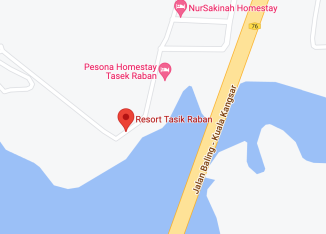

ROOTS & CULTURE


Kecil tapak tangan, nyiru kami tadahkan. Terima kasih Rock The World atas kebersamaan ini.
Hello everyone, here we are today to announce that we will back in Kuala Lumpur! We are so thrilled to share our official poster of Serba Serbi in conjunction with 20 years of the iconic and pioneer of music independent festival in Malaysia @rockthewordasia anniversary. We bring you, Roots and Culture .We are going back in time to Nusantara Style in celebration of our Roots and Culture with over 80 booth giving you the best selection of home ground local fashion brand, vintage goods, repurposed and re-imaged, accessories, artisan and handcrafted goods, sustainable clothing, workshop, coffee, yummy local eats, drinks and more!
Don’t miss this one of a kind of Festival where we all can unite in good times, celebrating Art, Culture & Music together in one pot no matter what’s your background
LOCATION
Jalan Barat, Bukit Jalil, 57000 Kuala Lumpur, Wilayah Persekutuan Kuala Lumpur
DETAILS
3rd December 2022,
Saturday 11.00am - 11.30pm